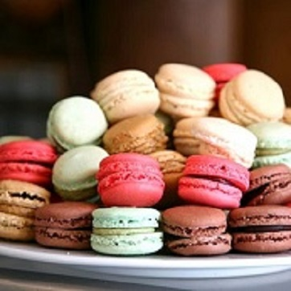
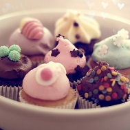
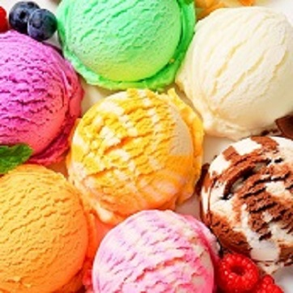

NOVO U PONUDI - MACARONS
Macarons - Pred vama su čuveni kolačići koji će vam u svakoj prilici izmamiti osmijeh. U saradnji sa francuskim partnerima, razvili smo našu recepturu i napravili popularne makarone magičnog ukusa. Koja vam je omiljena boja?
IZDVAJAMO IZ PONUDE - CUPCAKES
Cupcakes -San Marko za vas priprema i ove popularne poslastice, koje ne samo što predivno izgledaju, već se i tope u ustima. Mogu biti divan poklon za svaku priliku i deo vaše praznične trpeze, a možete ih uvrstiti i u slatko posluženje na svom rođendanu ili vjenčanju. I konačno, ovaj slatki zalogaj može vam uz neobavezno ćaskanje sa dragim ljudima uljepšati svaki dan. Probajte!
PROBAJTE NAŠE SLADOLEDE
Magični i prirodni ukusi sladoleda u formi štapića i keksa posutih raznim neobičnim dodacima, do korneta i sladoleda serviranog u porcijama ili kupovima, osvajaju prirodnim ukusima, dok ledena mermerna ploča (cold stone) za pripremu omogućuje neobično kombinovanje ukusa sladoleda po vašem ukusu.